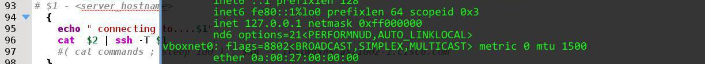

Professional with excellent IT skills and over 10 years of strong results in complicated telecom
environments.
FreeBSD, Linux system administration. Worked with different proprietary operating
systems.
Experience in shell scripting: Bash, Python.
Familiar with Git, SQL.
Able to work independently under pressing and result oriented. Quick adaptation in a new environments.
Wish to study new technologies and implement it in network.
Certificates: 2013 - CCNP